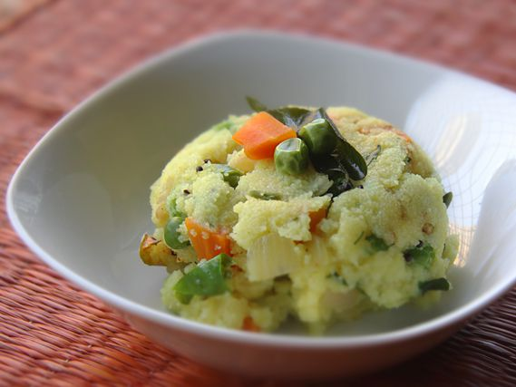

Upma
Upma
Discription
The upma recipe I share here is adapted from my mom’s recipe and continues to be a favorite in my home. The ingredients used to flavor the rava upma (also called suji ka upma) give it a deliciously satisfying taste that will make this dish one of your new preferred go-to breakfasts.
Ingredients
- Onions
- Green chilli
- Bengal gram
- Balck gram
- Rava
-
Steps:
- Prep the ingredients first to make upma recipe
- Heat a pan or kadai first. Add 1 cup rava or cream of wheat (fine variety).
- Begin to roast the rava. Stir often while roasting the rava.
- The rava or sooji grains should become fragrant and start to look dry, separate and crisp. Don’t brown the rava.
- Once the rava becomes fragrant and starts to look dry and crisp, switch off the flame and put the roasted rava on a plate and set aside.
- Lower the heat. Add 1 teaspoon mustard seeds. When you hear the crackling sound of mustard seeds, it means they are getting fried.
- Now add the ½ teaspoon cumin seeds along with 1 teaspoon chana dal (husked and split bengal gram) and 1 teaspoon urad dal (husked and split black gram).
- Stirring often fry until the chana dal and urad dal begin to brown a bit.